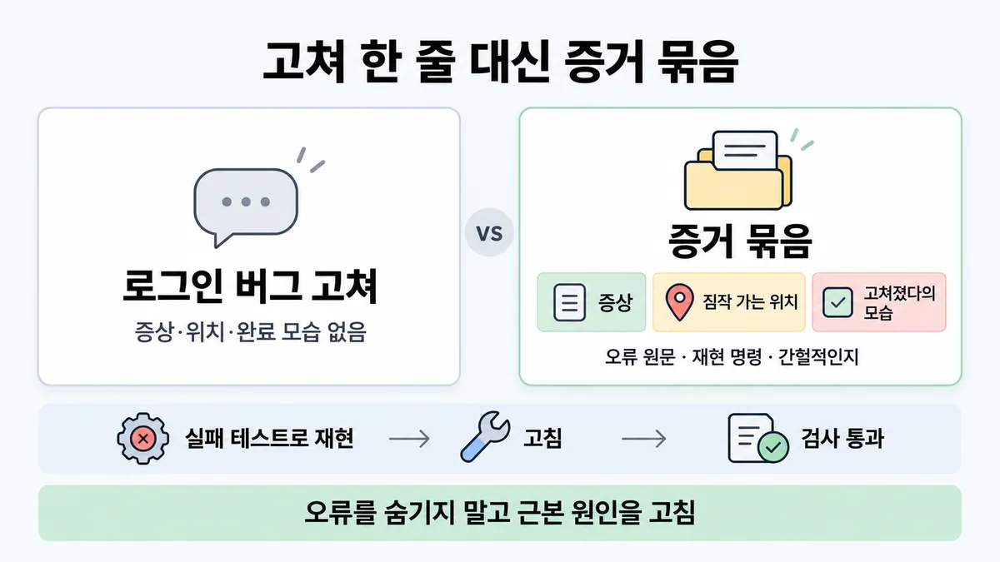
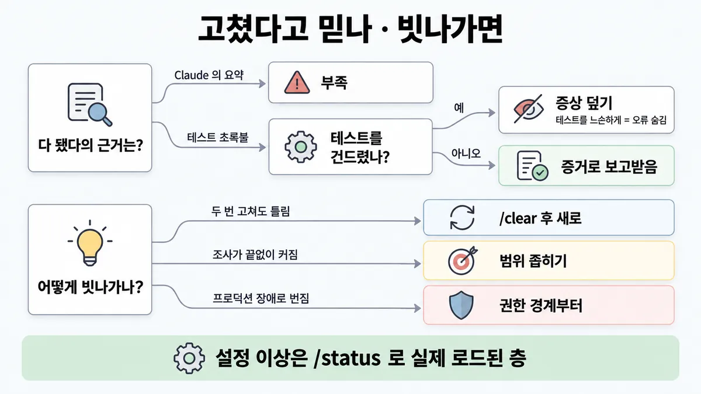
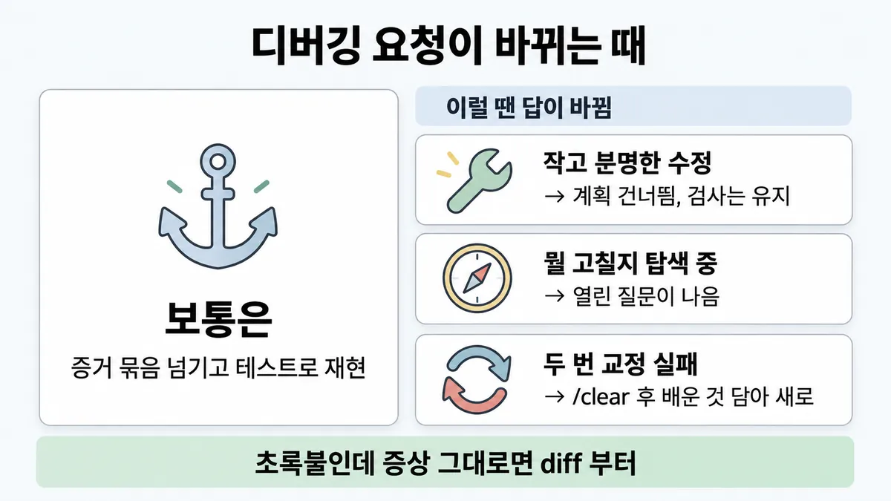

■ 디버깅 요청 증거 묶음
표시가 없는 문장은 공식 문서에서 확인한 내용이에요. 다른 표시는 읽는 법
왜 배우나 — 시험이 요구하는 것
시험 목표 7.3 디버깅과 운영 문제 해결 · D7 개발팀 7%Support debugging and operational issue resolution
이 개념으로 푸는 판단 (할 수 있어야 하는 것)
- 7.3① "고장났어, 고쳐" 대신 무엇을 넘기나? — 디버깅 요청을 어떻게 구성하나 (증거 묶음)
한눈에
"고쳐" 한 줄 대신 증상 · 짐작 가는 위치 · "고쳐졌다"의 모습을 넘김. 오류는 원문 그대로 붙이고, 재현 명령(스택 트레이스 얻는)·재현 단계·간헐적인지 늘 그런지를 알림
고치는 순서 = 실패하는 테스트로 먼저 재현 → 고침 → 검사 통과까지. 오류를 숨기지 말고 근본 원인(root cause)을 고침
비유 장애 티켓. "서비스 이상함" 대신 에러 로그 원문·재현 절차·발생 빈도를 붙이고, 종결 조건은 "재시작했더니 됨"이 아니라 재현 테스트 통과


ELI5
병원에 가서 "아파요"만 하면 의사가 못 고쳐요.
- 어디가, 언제부터, 어떻게 아픈지 말해요.
- 어떻게 하면 다시 아픈지(재현) 알려 줘요.
- 진통제로 아픔만 숨기면 병은 그대로예요.
- 다 나았는지는 느낌 말고 검사로 봐요.
개념 설명
원리
Claude 는 "다 된 것 같으면" 멈춤
- 돌릴 검사가 없으면 "다 된 것 같음"이 유일한 신호 → 실수는 사람이 알아챌 때까지 남음. 사람이 검증 루프가 됨.
- 검사(테스트·빌드 종료 코드·린터)가 있으면 Claude 가 일하고 → 검사 돌리고 → 결과 읽고 → 통과할 때까지 되풀이. 루프가 스스로 닫힘.
그래서 실패 테스트가 먼저
- 고치기 전에 "고쳐졌다"의 판정 기준을 고정하는 일. 먼저 실패해야 나중의 통과가 의미 있음.
- 오류 숨기기(잡아서 무시)·테스트 느슨하게 하기 = 검사를 속이는 것. 초록불은 켜지지만 원인은 그대로.
증거는 정확히, 범위는 좁게
- 컨텍스트 창은 가장 중요한 자원. 디버깅 한 번에 수만 토큰이 쌓이고, 찰수록 앞 지시를 잊고 실수가 늘어남.
- 그래서 오류는 원문 그대로(요약 X), 위치는 짐작이라도 적고, 조사 범위는 좁게. 넓은 탐색은 서브에이전트에.
- 실패한 교정이 쌓이면 그 자체가 오염 → 두 번 실패면 새로 시작하는 게 쌈.
핵심 질문 두 개
- Claude 가 "고쳐졌다"를 스스로 판정할 수 있게 넘겼나?
- 그 판정을 속일 길(숨김·테스트 약화)을 막았나?
규칙과 판단


갈림길
①②⑥ 무엇을 넘기나 [7.3①]
원문 그대로 + 완료 조건
오류를 붙이고, 고친 뒤 빌드 성공까지 확인하게. 숨기지 말고 근본 원인
증상 · 위치 · 완료 모습
짐작 가는 위치까지 적고 실패하는 테스트로 먼저 재현하게
재현 명령 · 단계 · 빈도
스택 트레이스 얻는 명령 · 재현 단계 · 간헐적인지 늘 그런지
파이프 · 직접 가져오게
cat error.log | claude · Bash·MCP·파일 읽기로 Claude 가 스스로 가져오게
실제 로드된 층
/status 의 Setting sources · claude --debug 로그 · claude mcp list
③④ 고쳤다고 믿나 [7.3①]
부족
주장 말고 증거 : 테스트 출력 · 실행한 명령과 결과
증상 덮기
통과시키려고 테스트를 느슨하게 = 오류 숨김과 같음 (Skilljar)
증거로 보고받음
근본 원인을 고치고 검사 통과 — 증거(테스트 출력 · 실행한 명령과 결과)까지
⑤ 계속 빗나가면 [7.3①]
/clear 후 새로
배운 것을 담아 더 나은 첫 프롬프트로
범위 좁히기
좁게 묻거나 서브에이전트로
권한 경계부터
프로덕션 장애 조사는 권한 경계부터 → ■ 장애 대응 권한 경계
흐름
그림 속 이름·금액·시간·토큰 수는 예시예요. 공식 한도·동작은 카드 본문 값이 기준.
장면 글로 보기
칸 : 나 → Claude → 검사
규칙 (검사) : 실패하는 테스트로 먼저 재현
질문 : "고쳐졌다" 는 무엇으로 알까?
① 증거 묶음 + 실패 테스트 ✓
- 시작 : 나 — 쪽지 : 신고: 세션 만료 뒤 / 로그인 실패
- 넘김 : 나 → Claude : 증상 · 위치 · 완료 모습 — 쪽지 : 증상: 만료 뒤 로그인 실패 / 위치:
src/auth/토큰 갱신 / 완료: 재현 테스트 통과 - 재현 : Claude → 검사 : 실패하는 테스트로 먼저 재현 — 쪽지 : +
refresh.test.ts/ 1 failed - 되풀이 : 검사 → Claude : 실패를 읽고 고침 — 쪽지 : FAIL: 만료 토큰 / 갱신 안 됨
- 통과 : Claude → 검사 : 근본 원인을 고침 — 쪽지 : 1 passed / 테스트 diff 없음
- 끝 : 근본 원인을 고치고 검사 통과 — 테스트는 안 건드림
② "고쳐" 한 줄 ≠
- 시작 : 나 — 쪽지 : 신고: 세션 만료 뒤 / 로그인 실패
- 넘김 : 나 → Claude : 증상·위치·완료 모습 없음 — 쪽지 : "fix the login bug"
- 건너뜀 : 검사
- 멈춤 : Claude : "다 된 것 같음"에서 멈춤 — 말 : “고친 것 같아요.”
- 끝 : 돌릴 검사가 없음 → 내가 검증 루프가 됨
③ 오류 숨김 ≠
- 시작 : 나 — 쪽지 : CI: build failed / TypeError: token / is undefined
- 넘김 : 나 → Claude : 오류 원문 없이 — 쪽지 : "the build is failing"
- 숨김 : Claude : 오류를 숨기고 테스트를 느슨하게 — 쪽지 : +
catch (e) {}/ −expect(token)… - 검사 : Claude → 검사 : 초록불 — 쪽지 : build passed
- 끝 : 증상만 사라짐, 원인은 그대로 — 테스트가 느슨해졌는지 diff 로 봐야
규칙 원문 ①②③④⑤⑥ (갈림길로 그린 규칙)
-
증상 넘기기 : 증상 · 짐작 가는 위치 · "고쳐졌다"의 모습. 예 = "세션 만료 뒤 로그인 실패 · src/auth/ 의 토큰 갱신을 봐 · 실패하는 테스트로 재현하고 고쳐" [7.3①]
오류 메시지가 있으면 원문 그대로 붙이고 완료 조건(빌드 성공)까지. 숨기지 말고 근본 원인
직전 변경(배포·diff)도 함께 → ■ 변경부터 묻는 진단 업계 일반 Claude Code 디버깅 팁엔 diff 없음
-
재현 정보 : 스택 트레이스 얻는 재현 명령 · 재현 단계 · 간헐적인지 늘 그런지 [7.3①]
자료 주는 법 =
@파일 참조 · 스크린샷 붙이기 ·cat error.log | claude파이프 · Claude 가 Bash·MCP·파일 읽기로 직접 가져오게 -
돌릴 검사를 쥐여 줌 : Claude 는 "다 된 것 같으면" 멈춤. 검사(테스트 · 빌드 종료 코드 · 린터 · 픽스처 diff 스크립트)가 있어야 스스로 되풀이하고, 없으면 내가 검증 루프가 됨 [7.3①]
검사 강도 = 한 프롬프트 안 →
/goal조건(턴마다 재확인) → Stop 훅(통과 전엔 턴을 못 끝냄) → 검증 서브에이전트(맥락 없는 새 모델이 결과를 따져 봄) -
증거로 보고받음 : 성공 주장 말고 테스트 출력 · 실행한 명령과 결과 · 스크린샷. 초록불만으론 부족 — 통과시키려고 테스트를 느슨하게 했는지 diff 로 확인 (Skilljar) [7.3①]
-
빗나갈 때 : 두 번 고쳐도 틀리면
/clear하고 배운 것을 담아 첫 프롬프트를 다시 씀 (실패한 시도가 컨텍스트를 오염) · 범위 없는 "조사해"는 파일 수백 개를 읽어 컨텍스트를 채움 → 좁히거나 서브에이전트 [7.3①]프로덕션 장애 조사는 권한 경계부터 → ■ 장애 대응 권한 경계
-
Claude Code 자체(설정·훅·MCP)가 이상할 때의 증거 : 설정은 층마다 다른 파일(로컬·사용자·관리형은 저장소 밖)이라 커밋된 파일만으론 실제 로드된 층을 모름 →
/status의Setting sources(이 세션이 읽은 설정 파일) ·claude --debug로그(훅 실행 내역) ·claude mcp list(서버마다✔ Connected·! Needs authentication·✘ Failed to connect) [7.3①]팀 지원 요청 양식에 이 셋을 넣게 하는 건 운영 판단 업계 일반
더 깊이 : 판단 규칙 · 상황 변수 (설명)
판단 규칙
| 조건 | 답 | 근거 |
|---|---|---|
| 증상 신고만 있음 | 증상 · 짐작 가는 위치 · "고쳐졌다"의 모습 + 실패 테스트로 재현 후 고치게 | best-practices "Provide the symptom, the likely location, and what “fixed” looks like." |
| 오류 메시지가 있음 | 원문을 붙이고 빌드 성공까지 확인 · 근본 원인, 숨김 금지 | best-practices "address the root cause, don’t suppress the error" |
| 재현 가능 | 스택 트레이스 얻는 재현 명령 · 재현 단계 · 간헐/늘 | common-workflows |
| 로그·파일이 큼 | @ 참조 · cat error. · Claude 가 직접 가져오게 | best-practices |
| "다 됐다" 보고 | 주장 말고 증거(테스트 출력 · 명령과 결과) | best-practices "Have Claude show evidence rather than asserting success" |
| 테스트 초록불 | diff 로 테스트 약화 여부 확인 | Skilljar 486930 "Checks that no test was weakened just to make things pass." |
| 두 번 교정해도 틀림 | /clear + 배운 걸 담은 새 첫 프롬프트 | best-practices |
| 범위 없는 "조사해" | 좁히거나 서브에이전트 | best-practices |
상황 변수
| 변수 | 값 | 답 쪽 | 근거 |
|---|---|---|---|
| 손에 든 증거 | 오류 원문 있음 | 원문 + 완료 조건(빌드 성공) | 판단 규칙 2 |
| 손에 든 증거 | 사용자 신고 문장뿐 | 증상·위치·완료 모습 + 실패 테스트 | 판단 규칙 1 |
| 재현성 | 늘 남 | 실패 테스트 먼저 | best-practices |
| 재현성 | 간헐적 | 간헐임을 알림 · 재현 명령·단계 | common-workflows — 그 뒤 처방은 공식 문장 없음(미해결 3) |
| 사람이 지켜보나 | 옆에서 봄 | 한 프롬프트 안에서 "검사 돌리고 되풀이" | best-practices |
| 사람이 지켜보나 | 무인 실행 | /goal 조건 또는 Stop 훅으로 검사를 강제 | best-practices "The /goal and Stop hook versions are what let an unattended run finish correctly without you." |
| 교정 횟수 | 2번 실패 | 새 세션·새 프롬프트 | 판단 규칙 7 |
| 수정 크기 | diff 를 한 문장으로 말할 수 있음 | 계획(plan 모드) 없이 바로 | best-practices |
| 대상 | 프로덕션 시스템 | 권한 경계부터 (■ 장애 대응 권한 경계) | 그 카드 |
연습 문제
고객센터에서 세션 만료 뒤 로그인이 실패한다는 신고만증상 신고뿐 들어왔다. 오류 메시지는 아직 없고, 개발자는 Claude 에게 "로그인 버그 고쳐" 한 줄을 넘기려 한다. 무엇을 넘겨야 하나?
시험 대비
함정
- "로그인 버그 고쳐" 한 줄 → 증상·위치·완료 모습이 없음 (공식 문서의 Before 예)
- 오류를 잡아 무시하고 빌드만 통과 → 숨기지 말고 근본 원인
- "테스트 통과했으니 끝" → 테스트가 느슨해졌을 수 있음, diff 확인 (Skilljar)
- Claude 가 "고쳤음"이라 요약 → 증거(테스트 출력·명령 결과) 없으면 검증 안 된 것
- 틀리면 같은 세션에서 계속 교정 → 두 번 실패면
/clear후 더 나은 프롬프트 - "원인 조사해 봐"만 주고 범위 없음 → 파일 수백 개를 읽음
- "Claude Code 설정 문제는 커밋된
.claude/settings.json만 첨부" → 로컬·사용자·관리형 층은 저장소 밖./status로 실제 로드된 층 - 간헐 오류인데 말 안 함 → 한 번 안 나면 "고쳐짐"으로 착각 업계 일반 공식은 "알려라"까지만
신호
"address the root cause, don’t suppress the error"
"Provide the symptom, the likely location, and what “fixed” looks like."
"write a failing test that reproduces the issue, then fix it"
"Tell Claude the command to reproduce the issue and get a stack trace"
"Let Claude know if the error is intermittent or consistent"
"Without a check it can run, “looks done” is the only signal available, and you become the verification loop"
"Have Claude show evidence rather than asserting success"
"Checks that no test was weakened just to make things pass." (Skilljar)


더 깊이 : 뒤집히는 때 · 오답 재료 (설명)
뒤집히는 때
1. 계획 없이 바로 고치는 게 맞는 때
- 조건 : 범위가 분명하고 수정이 작음 — 오타 · 로그 한 줄 추가 · 변수 이름 바꾸기.
- 판단 : 탐색 → 계획 → 구현 순서(plan 모드)는 부담이 있음. diff 를 한 문장으로 말할 수 있으면 계획을 건너뜀. 계획이 쓸모 있는 건 접근이 불확실하거나 여러 파일을 바꾸거나 낯선 코드일 때.
- 근거 : best-practices "If you could describe the diff in one sentence, skip the plan."
- 주의 : 계획을 건너뛰어도 "검사로 확인"은 안 건너뜀 (원리의 루프는 그대로).
2. 모호한 요청이 나은 때
- 조건 : 아직 뭘 고칠지 모르고 탐색 중 · 방향을 고칠 여유가 있음.
- 판단 : "이 파일에서 뭘 개선하겠어?" 같은 열린 질문이 미처 생각 못 한 걸 드러냄. 증거 묶음 규칙은 "고쳐 달라"고 넘길 때의 규칙.
- 근거 : best-practices "Vague prompts can be useful when you’re exploring and can afford to course-correct."
3. 세 번째 교정을 보내고 싶을 때
- 조건 : 같은 세션에서 두 번 고쳐 달랬는데 여전히 틀림. 예 : 결제 모듈 반올림 오류를 두 번 교정, 세 번째 교정 문장을 쓰는 중.
- 판단 : 세 번째 교정 대신
/clear→ 두 번의 실패에서 배운 것(원인 후보·안 되는 방법)을 첫 프롬프트에 담아 새로. 실패한 시도가 컨텍스트에 쌓여 오염됐기 때문. - 근거 : best-practices "After two failed corrections,
/clearand write a better initial prompt incorporating what you learned."
4. 초록불인데 안 고쳐진 때
- 조건 : 테스트 12개 전부 통과 보고, 그런데 신고된 증상이 그대로.
- 판단 : diff 부터 — 테스트를 느슨하게 했는지(단언 삭제·기대값 변경·skip), 오류를 잡아 삼켰는지. 둘 다 숨김.
- 등급 : (Skilljar 486930 · best-practices)
오답 재료
| 오답 | 왜 끌리나 | 왜 틀리나 | 등급 | 근거 |
|---|---|---|---|---|
| "'로그인 버그 고쳐' 한 줄로 맡긴다" | 모델이 알아서 찾을 것 같음 | 증상·위치·완료 모습이 없음. 공식 문서가 Before 예로 든 문장 | best-practices | |
| "오류를 잡아 무시하고 빌드만 통과" | 빌드가 바로 초록 | 근본 원인이 남음. 공식은 숨기지 말라고 명시 | best-practices | |
| "테스트가 전부 통과했으니 끝" | 검사가 있으니 믿을 만해 보임 | 테스트를 느슨하게 해 통과시켰을 수 있음 | Skilljar 486930 | |
| "Claude 의 완료 요약을 보고 머지" | 요약이 깔끔함 | 주장 말고 증거(테스트 출력·명령 결과) | best-practices | |
| "틀리면 같은 세션에서 계속 교정" | 맥락이 이미 있으니 빠를 것 같음 | 실패한 시도가 컨텍스트를 오염. 두 번 실패면 새로 | best-practices | |
| "원인을 넓게 조사해 봐" | 꼼꼼해 보임 | 파일 수백 개를 읽어 컨텍스트를 채움 → 좁히거나 서브에이전트 | best-practices | |
| "오류 내용은 요약해서 전달" | 짧아 보임 | 원문을 붙이는 게 공식 예. 요약은 단서를 잃음(업계 일반) | 업계 일반 | best-practices(paste error) |
| "더 큰 모델이면 한 줄 요청도 알아서" | 모델이 똑똑해짐 | 모델이 추론은 해도 마음은 못 읽음 — 파일·제약·패턴을 짚어 줘야 | best-practices "Claude can infer intent, but it can’t read your mind." |
참고
개념
출처
- 가이드 목표 7.3 공식 시험 가이드 v1.0
- claude-code-best-practices
- claude-code-common-workflows
- claude-code-settings
- claude-code-hooks
- claude-code-mcp
- Skilljar Claude Code in Action 486930 (2026-09-28 조회)
상태
- 업계 일반 3줄
미해결
- 목록 7.3① 의 "최근 diff 를 준다" : best-practices·common-workflows 원문에서 못 찾음(검색어
git diff·recent change). 카드엔 업계 일반으로 두고 ■ 변경부터 묻는 진단 으로 가리킴. - 목록 7.3① 의 "모델이 볼 수 없는 시스템을 진단하는 척하지 않는다" : 두 원문에서 못 찾음(검색어
can't see·cannot see·pretend). 카드에 안 넣음. - 간헐 오류 처방 : 공식은 "간헐인지 알려라"까지. 재현 확률을 높이는 방법(로그 추가·반복 실행)은 공식 문장 없음.
- 목록의 영어 신호 두 개("address the root cause, don’t suppress the error" · "Tell Claude the command to reproduce the issue and get a stack trace")는 원문에서 찾음 — 목록 그대로 ✓.